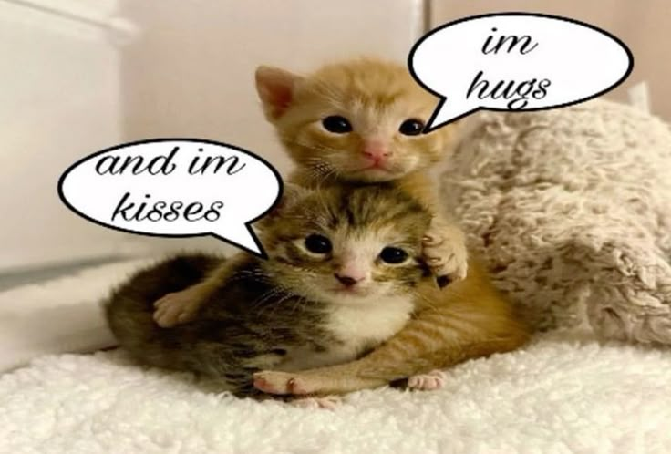

About...

the webmeowster
hii! you can just call me lynx. i'm a 19 y/o artist from midwest USA, currently just figuring out what i want to do in life. i love cats and going to shows/raves. the art i dabble in ranges from sewing to clay, though i mainly just draw digitally. i strive to make people smile ☺︎
the site
i created this site as a way to sort my brain: my interests, who i
am, my thoughts-- as well as store my art. i've had websites
before, but none of them got very far. i want to break the cycle
with lynx.fail!
i started creating sites in 2020? 2021? you may recognize me as
konfetti or biocatzard on neocities, as well as briefly
kittyrave.club and fantasiz.ing (the former domain i still plan on
using).
i'll be honest! i'm a very bad coder. i wish it was something my
brain could pick up more easily. maybe at some point i'll be able
to. i'm just not a very technical person! HTML and CSS are fine,
but i cannot wrap my head around JS >_>
this site is kind of a test to myself. how far can i develop it?
i'm a bit of a perfectionist if a perfectionist was actually
horrible at everything they did. i keep redoing layouts, remaking
content. i need to like it!! then i go back the next day and
change it. but i want to get out of that habit so i can actually
DO shit!


i used to be a big twitterhead but i deleted it late 2024 and it
improved my mental health immensely. now i rarely post on
anything! i do plan on being more active on bsky posting-wise.
i do have a twitter and instagram, but those are purely for
following artists i like.
if you need to email me, i can be found at
nuclear(at)chemist(dot)com
 last listened to:
last listened to: